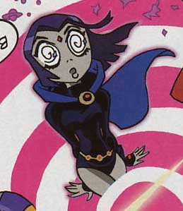

(日記とか言うモノ)
パンクワールドのオクティ、名前は出なかったので、勝手に
「悪（アク）ティ」と命名。
日本語じゃん！ま、ほらサムライジャックではアクゥっているし。英語スペルでActiって書いてもぴったり！！
ガンガン公開で、すっかり内容までバレバレな感じ。同人誌の常識とかよく知らないので、こういうやり方って、どーなのかなあ？小町屋さん怒ってなけりゃいいけど。
webから入ったものだかから、発表の場としてはあまりこだわりがないのですが、やはり、「本としてまとまる」喜びはまた別なものかとも思ってます。あとイベント参加の楽しみってのもあるのかな？
前に同人やってる方と話した時に、「webはやらないです。イベント（同人誌）のほうがいい。イベントだと直接買ってくれる方の顔が見れるし、反応もわかる。webだとROMばかりで全然反応がなくてやめました。なんだか、なにやってんだろう、俺って思うようになっちゃうんですよ」
というのが印象的でした。
明日からちょっと一泊旅行に行ってきます。結局原稿は2ｐ半までしか進まなかった。遅 す ぎ。
横浜のガールズ見にゆきたかったなあ。

えっと・・バブルスじゃなくてブラットのつもり
数ページしかない漫画なのに、こうやって描いたとこから載っけてくと、全部公開するはめになっちゃうような気がしますが、気にしない。
漫画ってのは連続してこそ初めて「意味」をもつものだと思うし。動いてこそアニメ、みたいなもの。
夏コミメモを追加してみた。パワパフとカートゥーンとアメコミ関係。なんか漏れてたら教えてください。
初めてコミケに行った時に、その巨大さに何も出来ずに途方にくれたトラウマがいまだにあるので、キッチリ事前調査しておくクセができました。ぷにケットとかの規模ならそんな必要もないんだけどね。
8月はクライアントどもが勝手に休みやがるから、仕事がツメツメになるパターンが多いので、時間の都合をつけるのが難しい時期ではあるんだけども、なんとかやりくりして参加したい。15日は必須だとしても、14日も絶対行きたい。FScに会いたいですよ。しゃべれないけど。
アメコミを色々読んでると、つたない英語力だけに不思議なことを感じることがある。同じレベルの難易度の文章のようなのに、読みやすい（というか、頭に入りやすい？）ものとそうでないものがあるってこと。
Nightmares&Fairy Taleは不思議とスラスラと読める部類の本でした。なぜだろう？
どこに差があるのかまだわかりません。うーーーん、本当に不思議だ。
で、そのNightmares&Fairy Taleを読み返して、なぜ私がアナベル人形を買えなかったのかようやくわかった。
アナベル人形を持てるのは少女だけなんだよ！！悲しいけど、そのほうが美しいので、良しとする。
少女だけが買えるんだ・・少女？ ・・・・・・・すみません、女性にしときます。
あ〜〜もうやんなっちゃう。いくら仕事がハードでもかまわんです。無茶なオーダーだっていいですよ。でも、バカと仕事するのは苦痛！！ビジョンがなくて、思想に軸がなくて、なおかつ思いつきで言ってくるようなバカは最悪だ。しかも判断力も、責任感もないとくりゃ、救いようがない。なんでこう、モチベーション下げることばかりするかね。特に代理店がバカだと最悪。逆境は燃えるからいいですよ。萎えるのだけはカンベンしてくれ。あーーバカと仕事はしたくねえ。
と、グチったとこで原稿。
全然進みません。やばーー。話は出来たので、たった数ページ仕上げるだけなんですが、単純にそれやってる時間がない。まあ、いつものことですね。8月からまた仕事増えそうなんで、できれば今月中に完成させたい。週末は旅行にいっちゃうしね。
コミケでのカートゥーン、パワパフ系のチェック中。
そしたらビックリですよ！
「Nightmares & Fairy Tales」のFScの同人誌がコミケで発売される！！しかも日本語版？！そのうえ、本人も来日！！！！マジですか〜〜＞マジのようです
8/14 東シ28B「貧血エレベーター」にて。なんか人気サークルっぽいから入手できるか不安。ウエダハジメってコミック版のフリクリ描いてた人だよね。うーむ、確かにFScの絵柄とか好きそうだ。
基本的には委託な感じなんで、15日もでるみたいだが、どこのサークルになるのかな？
コミケ用の漫画、結局悩んだあげくに、新作とパワーパンク両方やることにした。優柔不断すぎ。もちろん、2本とか描いてる余裕はないので（能力的にも・・・とほほ）ムリヤリ1本に。
こんな感じ。
服を変えたら、ブラットとバブルスの区別がつかないような気がしたが、気にしないことにする。
あと、けしごむかけとかめんどいので、ペン入れはタブレット（デジタル）にした。ただ、web用の絵と違って印刷用は解像度が高くなるので、作業が重くなるのが難点。それと、全体の見通しがわかりにくいのと、線の太さとかの感覚がピンとこないのが困りもの。まあ慣れだとは思うが。こういう場合はやっぱりコミック専用お絵かきツールのほうがいいのかもしれないなあ。そういうのって、ヌキの表現やトーン機能とかも付いているようで、なんだか気になる。
と、思ったはいいが、サインペン描きみたいな私の絵ではあんまり関係ないかもしれない。
しかし、PC描きに慣れちゃうと、アナログで描いてるとレイヤーとかアンドゥがないのにイラついたりします。一本の線にかける魂というものが希薄になっていってるのかも。
パワーパンクといえば、The
COMIXのパワパフコーナーを見るとスゴイことになってますな。
完売→再入荷→完売→再々入荷→完売→再々々入荷 ！！！
再々々入荷って・・・マジで日本で一番売れたパワパフコミックかもしれん・・・
7/9にも再入荷かけてたみたいだし、今webで注文できる状態にあるので入手可能かも。
昨日なにを思うでなくA-KONのこと書いてたら、なんだか今日TVでA-KONについて放送されてたみたいですね。ものすごい偶然。奇妙なタイミング。もしかしたら電波を受信したのかもしれません。
てなわけで、日本のこの手のイベントといえば、コミケ。
今回も小町屋さんからおさそいを受けて、小町屋さんとこの同人誌にゲスト漫画を描きます。ていうか、今まさに描いてます。（これから描き始めるとも言う・・あうあう）ごめんなさい〜〜。だから多分4pくらい。。
せっかくなので、パワーパンクか新作ネタでいきたいと思ってはいるんですがどーなることやら。

こんな感じ。
ペンとかないので、いつものサインペン描き。むしろ、最近ペンタブで直接描くことが多いので、いっそのことイチからペンタブでやったろうかとも思惑中。
今回小町屋さんとこはTeenTitansネタとかもやるみたいで、あー早く読みたい。私はあいかわらずパワパフですが。
これとは別に、今回はこちらの同人誌にも参加しました。
これは古今のカートゥーンをデータベース的にズガっとまとめちまおうという、いわば資料本。カートゥーンの資料的な本ってないよね〜、じゃ、作ろうか！てなノリから始まったやつで、ここでは「ビリマン」の紹介ページを担当しました。
ていうか、ホントはバットマンとかタートルズとかも書いてよ、とか言われてたのに全然間に合わなくて「ビリマン」しか書けなかったってのが本当です。こちらでもごめんなさい〜〜。全然貢献してません。
トムジェリや少年シンドバットなど古い作品から、カートゥーンカートゥーンズの作品、はては未公開のインベーダージムやMLaaTRやTeenTitansやらも載ってるというごったまぜな本です。当然ながら、すべてのカートゥーンを網羅できるはずもなく、気力があったら2も出す予定だとか。興味ある方はどうぞ〜。
あ、文章ものでは貢献できなかったけど、イラストコラムを １P描いたのでよかったら見てね。好きに描いていいって言われたから、ホントに好きに描いちゃった（笑）
カートゥーン本なのにレノーアがどーーーーん！と。すんませんすんません。
3Ｄアニメ大盛況。ってことで、やっぱり日米では嗜好が違うものなのか、と昨日思ったが、どうもそう簡単には言えないような気がしてきた。アメリカでは「文化層の差」ってのが、思ってるよか深いのかも。
と、いうわけでアチラのアニメコンベンションの一つ、A-KONを覗いてみた。
見事なまでの偏り方で、ちっとも参考になりそうもないっていうか、そもそも何故私はこんなの見てみようとおもったのか？ふっ暑さのせいさ。わけわからんが、まあいい。
すさまじいばかりのコスプレっぷり。なんかハマったときの狂いっぷりはアチラのほうがすさまじいのではないかと思える。噂に聞くトレッキーとか常軌をいっしてるらしいからなあ・・・
なるとや犬夜叉などあたりまえ、ハガレン上等。
いろいろ見てて、なにより凄かったのはこのドラゴンボール組。
さ、さすが大陸！
（;゜д゜）超ヘビーーー級！！！それを18号と言い切りますか！
ま、そんなことはおいといてだ。
閉店セールやってるっつう、トライソフト秋葉店に行って来ましたよ！
閉まってました。
( ﾟдﾟ)ﾎﾟｶｰﾝ
日曜にお店あいてなくて、いつ行けと・・・確かに入口の前に「7/31まで閉店セールを・・」とかあったので、間違いなく31日まではやってるんでしょう。でももう行けることはないでしょう。さよならトライソフト秋葉店。
で、その足で原宿に向かい、ブリスターに寄りました。
アナベル人形がセール中との情報を聞き、鼻息荒くして乗り込んだはいいけど、ありませんでした。
ズガーーン、売り切れ・・・
「あの、アナ、アナ、アナベル人形はもう無いっすかぁ？？？？」
「はあ？」
「はあ？じゃねーよ！この糞野郎！アナベル知らねーーとでも言うか！アメコミ屋店員にくせに、この！この！」
「あ、ご注文のLENORE#11入荷したんで、取り置きしてますけど」
「えへへへへ、やだなあもう。早く言ってよん。い け ず ♪」
というわけで、LENORE#11入手できてホクホク。終わりよければすべて良し。
意味不明な踊りをするレノーアたん（笑）
また続きになってました。もしかして、＃10から始まった新シリーズは長編なのか？？
BOO BOOがお亡くなりになるは、呪いでぬいぐるみになってたヴァンパイアが元の姿に戻るわと、なかなか劇的な展開が続くこのシリーズ、次回も楽しみでなりません。ただ、次がいつ出るかだけが心配だ。なにしろ、注文してたのにこねー、こねーと言ったてた＃11は、実は予定どおりに出なくてのびのびで、今月やっとでたというくらいですから。
シュレック2 全米ではめちゃくちゃヒットしたみたいですね。あれだけ騒がれたファインディング・ニモよりヒットとは・・。もうこれで、完全に米国ではアニメ映画といったら3Dってことになっちゃいそうです。日本と違って2Dアニメの興行成績がズタボロで、3Dアニメは記録塗り替えるくらい大ヒットって実績ができちゃってますから、普通の感覚のプロデューサーだったら、まず2Dでアニメ映画はやらんでしょうなあ。
たまたま作品がおもしろかったから。とは、もう言えそうもないな。文化的嗜好にこれほどまでに差があるとはねえ。スパイダーマンも実写でなければ、きっとあれほどのヒットはありえなかったと思う。極端なまでに「子供文化」と「大人文化」を差別化してるんだろう。
TeenTitansとか出てきたから、日本と米国の嗜好がかなり近づいてきたような錯覚を覚えたが、まだまだ深くて暗い溝が横たわっているようだ。日本側からみても、トライソフト秋葉原店閉鎖の情報は象徴的。オタクの街となった秋葉原でもコレだもの。
で、ニモつながりで、こんな本がでたようです。
アメコミの歴史をさかのぼってゆくとぶち当たる、リトル・ニモ。絵本とコミックの中間のような作品で、エポックメイキングな作品としてけっこう有名なものなんですが、まさかそれが日米合作で劇場アニメとしてつくられていたなんて、最近まで知らなかったです。いや、ほとんどの人が知らないだろうと思う。あんのじょう、興行的には大失敗したっぽいし。
ただ、この作品完成までに15年の歳月を費やしていて、そこではやはり日米の深い溝があったようで、かなり苦戦していたようだ。で、多分この本はその顛末を描いたものだろうと思い、ちょっと期待している。
なにしろ、初期はブラッドベリが脚本、宮崎駿、高畑勲演出と夢のようなメンバーだったにもかかわらず、あらゆるとこで対立、で一回解散ということがあったらしい。詳しい顛末はよく知らないので、よりこの本でどのように描かれているかが楽しみなのだ。
このへんの日本のアニメと米国のアニメの関係については、
「アメリカで日本のアニメは、どう見られてきたか？（草薙
聡志）」
で、読んだんだけどね。
ディズニーとライバルたち
の件もあって、ちょっと心配になって読み返してみたけど、多分これはそれなりに信用できるんじゃないかと思う。参考資料がwebサイトから新聞記事までと幅広いし、邦題と英題の関係も間違ってはいない。アメリカのスタジオだけでなく、カナダのニルヴァーナもちょこっと出てきたりするのも好感触。ファンサブの話とかも出てきて、ちゃんと文化研究としてよく調べてる。
この本によると、アメリカでもめちゃめちゃ大ヒットしたかのように思われてるセーラームーンが、最初は視聴率がとれずにうちきり。しかしコアなファンによって再開の署名運動がおきて、カートゥーンネットワークのToonami枠で復活、大ヒット。調子に乗って「残りのRとかSSとかもやれや〜」とかリクエスト攻撃して、ガンガン放送されるようになったとか。その後、「ハム太郎」が始まってセーラームーンの時間が減ったことに抗議！って蛇足なエピソードもオモロイ。まあ、今はそのへんの層は「犬夜叉」に移行したっぽいけど（笑）
他には・・・
ガッチャマンのアメリカでのタイトルは「Battle of the Planets」っていうのは、それなりに知られてるけど、なぜこのタイトルなのか？
これは暴力的と言われる日本アニメを和らげるための処置で、アメリカ版ガッチャマンは設定が違うのですよ。 惑星ギャラクター（Spectra）と戦うために、ガッチャマン（G-Force）は、恒星間飛行をして宇宙のどっかの星で戦ってることにしているからです。だから「Battle
of the Planets」。ようするに、破壊される建物が「地球」でなければ、多少の暴力は許されるってことなんですね、アメリカでは。
だからシャドウレイダースとかビーストウォーズとかはあれだけハデに戦闘してても、OKってことなのかな。とにかく、宇宙レベルまでふろしきを広げると抽象度が高くなって、薄まるってことかしらん。
うなぎ喰った〜〜〜！
元気になった〜〜〜！
アホみたいだがホントの話だ。いやもう、一日中朦朧としていて、確かに黙々と仕事はしていたのに、全然なにやってたんだか覚えてないというような日々がウソのよう。
前からウナギ喰いてえ、ウナギ喰いてえって思ってたけど、あれは体が欲していたんでやんすねえ。
コンビニウナギでもいいかとも思った時期もあったけど、やっぱり高い飯屋で極上の喰わねばだめだっ！とばかりに奮発して喰いにいきましたよっ。同じものでも、プラスチックのしょぼい器じゃだめなんだよ。あたためなおしじゃダメなんだよ。肝吸いもついてなくちゃダメなんだよ。国産じゃなきゃだめなんだよ。
うーなーなー、うな、うなうなな ギ！♪
ンマーイ。
栄養素が同じとか言われても、やっぱり自分はサプリとか味気ないものはダメすねぇ。体は満たされても、心、ココロの隙間がうまらなきゃね。どーーーーん。
やはり料理は味じゃない。素材でもない。演出ですよ。
達人の料理よか、好きな子がつくってくれた料理のほうが旨い。安っぽくて汚い器にのった料理よか、秀麗な器と繊細な盛り合わせの料理のほうが幸せだ。
若い時はそんなの気にしなかったうえに、味より量と値段だったけど、最近は満足度や幸福指数で料理を選んでます。だって、もしかしたら明日倒れて死ぬかもとか思ってると、しょぼい料理なんか食ってらんないですもの。
ウナギのおかげで、いろんなとこも元気になったゾー。フーンふん。ぶーらぶら。しゃきーん。
え、暑いからイヤ？そ、そんな・・・
話は変わって、スパイダーマンにX-MEN登場の回を見ました。
当然ながら、昔テレ東でやってたのと声違うね。ローグがおばちゃんくさい声だったのがちょっとショック。なんか長距離トラックの女運ちゃんみたいだ。ガンビット・・もちっとクールな感じでおねがい・・・
ビーストが千葉繁でなかったことで、ちょっと頭よさそに見えた（笑）
しかしまあ、そんなことよりホブゴブリンがコンピュータいじるとこのシーンが忘れられません。
「CD-ROMに記録しました」
って、すげーーーーー。記録できるCD-ROMかよ！！ていうか、それじゃROM（Read Only Memory）じゃないやん！RAMじゃん！
ピーター、理系なんだからつっこんでくれよー。
えええ、東京39.5度だって〜。（もうリンク張る気力もない）
今日は打ち合わせが重なって、その地獄の釜のなかをいったりきたり。めまいはするは、頭痛はするは、気分最悪と、もしかしてこれが噂に聞く熱中症ですか？てなくらいグロッキー。
そのくせ、明日もどうやら徹夜になりそうな予感。マジ泣き入れて逃げようかと思惑中。
こんだけ暑いんだから、バットマン：サブゼロでもシアターでやってくれたっていいのに。
ビリマン8月にも復活ならずですか・・・・
ここまで来ないと逆に新作ひきつれて復活の予感が。でもそうなると、復活は12月くらい？
いやいや、やっぱりハロウィンに復活ですかね。ビリマンなだけに。
とか書いててすでに朦朧としてきた。お父様お母様スカポン太はもうだめです・・・
さまざまな冒険をへて勇者への経験値をつんできたはずの私ですが、今度の夏コミのカタログは買えそうもないかもしれない。あの表紙は・・・いくらなんでも・・・
どうせいつものごとくピンポイントだから無くても困らないか。
世間では3連休なんですなぁ。ジャンプが早だししてたので気が付きました。いいかげん休みがないと描くヒマがない。どーにかならんものか。
とりあえず、主食がタウリンになりつつある状況はマズいと思う。あー、ウナギ食べたい。コンビニので我慢するかなあ。
キムポッシブルスペシャル、さすがに12時間というのはつらそうだ・・・
まあ、新作分はリピートで拾うこともできるし、そうそう焦らずに。ただ、映画はリピートするかわからないので、これだけは確実にしとめなければなと。
ところで、わたし、かなり深いところに来てしまってるのでしょうーか。
遠くで、おいでおいでされてる状況とばかり思っていたのだが、気が付いたらとっくに境界は越えていたと・・・ ずがーん。
それはともかく、今日買った漫画。
「水鏡綺譚」（近藤ようこ）
ずいぶん前に未完のまま終わってしまっていた作品だが、最近最終話を書き下ろして完結したようだ。近藤ようこの作品では、小栗判官と同じくらい好きだっただけに、即買い。
時は室町末期くらいだろうか。狼に育てられ、人間になるために旅をする少年行者ワタルと、野盗にさらわれ魂をどこかに無くした少女、鏡子（かがみこ）の物語。
護法童子やら白比丘尼やら勧進をする渡り巫女やら宇賀神やら出てくるので、それだけでもドキドキだが、全体に流れるこの空気がたまらなくいい。やはり近藤ようこは、現代物より時代物（特に縁起ものっぽいテイスト）が最高だよなあ。
最終話はたまらなかった。漫画を読んで涙を流すなんてどれくらいぶりだろう。悲しいとも違う、切ないとも違う、ああ、なんと表現したらよういものか。もの悲しいとでもいうか。山でシカの声を聞いたよう感情。
「愛とは違う『慈悲』とはとても美しい言葉なのですよ」と教えてくれたあの先生なら、わかるだろうか？
こんな話などなければよかったのに。鏡子の魂などいつまでも戻らなくて、永遠に旅をしてればよかったのに。失ったものを取り戻すために、失う物語だ。
それにつけても江戸じゃなく、室町のころの着物っていいなあ。
帯に高橋留美子がコメントを描いていた。
そういえば、犬夜叉はなんとなく似てるなあ。あれも失う物語になるんだろうか。
今日はつまらないわりに、時間ばかりかかって、なおかつめんどくさいという仕事を延々やってたので、激しくテンション落ちまくり。「あーもうやだやだやだやだやだ」そんなことばかり頭にうかぶので、作業のペースも落ちまくっていつもより倍時間がかかる悪循環。あーやだやだ。
あーもう、このまま寝ちまおうかと思ったけど、番組スケジュール更新時期なんで、覗いてみる。
ん〜と、まあXエボの新エピってとこかな。
あっ！クルテクスペシャルが！けっこうクルテク好き〜。そうか、秋に日本で劇場公開が予定されてるからなんですな。クルテクに出てくるウサギさんがアホっぽくて好き。
更新されてません。いつもここは遅い・・・もちっとガンバレ。
うわっ！8月のディズニーはなんかいいぞ！
ふしぎの国のアリス、キター！見よう見ようこれは見よう。
グーニーズ、けっこう好き。ベスト・キッド全シリーズやる〜〜！よーし俺もいまから雑巾がけだ！
そして
キムポスペシャル ｷﾀ━━━━━(ﾟ∀ﾟ)━━━━━ !!!!
新エピだ〜〜！う わーーい。うれしー。
しかも映画「キム・ポッシブル：タイムトラベル」 まで！これってあの、「A Sitch in Time」だよね。見たかったんだよ、見たかったんだよ。感涙。
さすが、営業は糞だけど、制作には好感もてるディズニーだ。 もう、「そろそろ契約解消すっか・・・」と思った矢先にいつもコレだもの。ちきしょう、ディズニーにも踊らされてるのか俺は。
あ、下がってたテンションがまた上がった。やはり人はパンのみに生きるにあらず、ですな。（多分意味違うけど）
言葉といえば、日本語ではパワパフサイトやり始めてから使うようになった「萌え」という言葉がある。最初はかなり抵抗のあった言葉だが、とにかく便利このうえない言葉なんで、ついつい使ってしまう。（実は使ったあとに微妙な敗北感が残るのだが、これは私だけだろうか？）
で、その「萌え」なんだが、知人と話していたときに「萌え」という言葉が出てきた。そいつの隠れた部分での趣味はわからんが、そういう言葉を使うようなタイプではなかったのでちょっと驚いた。それと同時に妙な違和感があった。どうも「萌え」の使い方が文脈的におかしい。なんか話のつじつまがあわない。なんなんだこれは？よーく聞いてみて、自分なりに解析してみた。
どうやらそいつは「萌え」を「エロい」とほぼ同義語のように使っていたのだ。
そんなばかなっ！！
確かに一部ではそれらを共に持つモノも存在するかもしれないが、そもそも別の言葉、属性であるはずだ。いや、まてよ、そういう自分はなんとなく使いはじめただけの、いわば「萌え」という言葉の初心者であるわけだ、よって自分が間違ってる可能性だってある。えー、間違ってたの？
ちょっぴり動揺したので、ちゃんと定義されてるとこはないかと調べてみる。もちろん言葉の意味やニュアンスなど人それぞれだから完全な定義などないかもしれない。新しい言葉ならなおさら。だが、それなり定義されていれば、それが正しいかどうかはともかく、「定義」されるだけの一般性をもっていることは確かだ。「萌え」＝「エロい」だったらかなりショックだ。
で、
ここは定義としてよくまとまっているのでわかりやすい。ちょっとほっとした。やはりエロと同義ではないようだ。
同人用語の基礎知識/
萌え/ 萌え萌え〜/ moe
どーいう意味なんだ？と考える人はやっぱりいっぱいいるみたいで、探せばもっとあるだろう。
ところがだ。
おたくとは何か〜「萌え」の意味
「主として性衝動を根源とする欲望」というワードが！
ここも、いろいろと考察していて、かつコメントにもたくさん同意した意見がみられますが、どうも私にはしっくりいかなかった。えーーやっぱりそーなわけ？
これはいわゆる恋愛心理学における「つりばし効果」と似たようなものではないだろうか？吊り橋をカップルで渡ると、恐怖で心拍数が上がる（ドキドキする）。それが恋愛においてドキドキする身体状況と似ているため脳が錯覚し、近くにいる異性に恋愛感情をもつ可能性が高い。という理論。
「萌え」というのは感情語のようなので、対象物に対する感情のゆれと衝動が、エロリビドーのゆれと衝動に酷似していることから発生する錯覚（というか、融合？）なのではないだろうか。
いちおう、萌え対象に対しエロ妄想をいだくという流れは理解できるが、同時に内包しているとはちょっと思えない。
超昂天使エスカレイヤー-Beat Angel Escalayer-
これはエロゲーのレビューであるが、「“萌え”と“エロ”の両立あるいは融合」というワードが出てくる。『融合』というように本来別々のものとして、とらえられていたと思えるのだが。
ただ、最近は制作側から「萌えキャラ」として提示されてきているもの（もちろん日本産）は、多くがエロ要素を含んだ形でパッケージ化されているものが多いようにみうけられる。そういうものばかり見て「萌え萌え」いってると「萌えの中にはエロが内包されているもの」と認識するようになってもおかしくはないのかもしれない。
ていうか、「それが元々の使われ方だよ」とか言われたらみもふたもないけど。
ここまで書いて、ふと、思いついたことが。
アダルトビデオ系を検索してみる（あえてリンクははりませんが）
どうもこっちの世界でも頻繁に使われているようだ。今まで調べたとこが二次コンに近いニュアンスで、（フェチ的な要素も含みながらも）抽象度（空想度）が高かったのに対して、こっちは単純に「カワイイ」の置き換えが多かった。知人と同じく「エロい」と同義で使ってるとこすらあった。
そうかー、なるほど。知人はこっち系だったのか〜。と、妙に納得。
と、いうことは、「萌え」＝「エロ」という意味での用法が、これからももっと増えてゆく可能性がたっぷりあるってことでしょうかね。言葉というものは正しい意味などはさほど重要じゃなくて、「定着しちゃったもの勝ち」な側面もあるので、油断できません。
でも、それはやだなあ。
アメコミ読んでたり海外サイト覗いてたりすると、辞書にもなってない単語によくぶちあたります。
特に顕著なのは海外BBSでの会話に出ててくる単語。日本の掲示板と同じなんですが、やたらと俗語が多いんですよねえこれが。さらに、普通の俗語と違って、ネット特有の俗語も。
それはさておき、最近分かったのが
glomp
この単語、けっこう見かけるわりにはよく分からなかったんですよ。文脈的に親愛の情を示す言葉っぽいとはおもってたんですが、具体的にどういう意味なのかさっぱり。相手の名前を呼んだあとに「擬音」的な感じに使われているような感じ。どうも動詞や形容詞とはちょっと違う感じがしてんですが、名詞とも違いそうなニュアンス。でも、なんか見たことある単語なんだよなあ・・・と、ずっと思ってたんですが、今日たまたまアメコミ読んでたら、「抱きついてるシーン」で擬音として使われていた。
ただ、そこでは同じ抱きつきでも、優しく抱擁する場合には「Hug」。
一方「glomp」は、ものすごい勢いで飛びついてぎゅーっとするシーンに。
よって、「glomp」は「きゃーーーー！抱きっ！むぎゅーーー！」って感じの意味ではないかと推測。そういうメドをつけてネットで調べ直してみると、やっぱりそれっぽい！しかも、どうやら漫画チックなコミカルな表現ぽいんですよ。コミックやアニメからの俗語かしらん。
俗語といえば（最近使ってる人は見ないけど）「BTW」ってのよく見かけてました。それが、「by the way」の俗略語だと知ったときも、へぇ〜、と思ったものです。
こんな単語ばかり覚えて、総合的な英語力はちっとも向上しません。だめだこりゃ。
アメコミとかだと、文法わからなくても絵が状況やニュアンスを補足してくれるので、ちっとも文法スキルは向上しないのですよ。単語の拾い読みすりゃなんとかなれば、だいたいわかるっていうか・・・変な単語ばかり覚えるっていうか・・・トホホ。
ま、とりあえず使ってみるか。
○○さ〜ん！*Glomp* 無人惑星サヴァイブ37話見ました〜。
渋谷のハンズによったついでにThe COMIXによって・・・ではなくて、ディズニーストア渋谷店によってきました。ほとんど冷やかしのつもりだったんですが・・・
ママンやったよ！
キム・ポッシブルのグッズゲットだぜー！

キムポのメモ帳。
どうせお鼠様バンザイな品揃えだろうと、全然期待してなかったものだから、激しくビックリ。
他には、キムのポーチ、シール、タオルとかありました。て、いうかそれくらいしか無かったんですが・・・
でも、ようやっとキムポのグッズも扱うようになったんですな、出銭。すこし見直したよ。
調子にのって、店員のおねえさまに・・
「学園パトロール・フィルモアもありますか？！」
「え？？？？」
ちっ。
ま、ともかく予期せぬ方向から見えないパンチをくらった感じで、激しく動揺してしまい、思わず衝動買い。
キムばっかで、シーゴーの絵柄があんまりなくて、ちょっぴりショボン。
ていうか、冷静になった今思うと、やや後悔。ちょっと高かったかも。420円でした。アメコミが一冊変えちゃうよ！
そうだこんな時は・・・
久々にbleedmanさんのとこ覗いたら、チャプター2が終わってた。でもって、早くもチャプター3が。
なんといきなりジェニーが登場ですか〜！！！
RRBも登場。こいつらいつの間レッドリボン軍にはいったのかしら。（と、わかりやすいボケをかましてみる）それにしても、このファンコミックは目が離せないですなあ。
ところで、TeenTitansは早くも8月から第三シーズンが始まるようです。
その第三シーズンの第一回目。
JINX再登場！ｷﾀ━━━(ﾟ∀ﾟ)━━━ !!!!
もっと詳しい情報ないかと、こちらを覗いてみたところ。ふむふむ。
ジンクスたちの学園にサイボーグが潜入捜査？って話のようだが・・・
サイボーグはXエボでカートが使ってたようなホログラフィの変装マシンがなんかを使って、普通の青年のようになるらしいです。ふーむ、これはなかなか珍しいものが見れるかも・・・って、そんなの期待してませんよ！サイボーグとかギズモとか、どーーーーだっていいから、ジンクスの出番を沢山ください。
サイボーグが人気ないのはこちらの、今一番油ののってるTTお絵かきBBS（TitansGo.net）を見れば一目瞭然。
なにしろ、トップの看板絵にサイボーグの代わりにテラが載ってるくらい。（不憫だが同情はせん！）
ここのお絵かきBBSは、本編に負けないくらいはっちゃけてて、最近目がはなせません。海外のお絵かきセンスもかなり変わってきてることが実感できる。5年くらい前は、こんなテイストはなかったような気がするんだよねー。
ところで、学園ジンクスってどんな話になるんだろうね。

ありえなーい。
すみません。ねこみそさんとこのスク水レイヴンでも見て、お口直ししてくだちゃい。
今日は久々のお休み。今までの分をとりかえすがごとく、もう寝てばっか。
明日のために少しでも仕事進めておいた方がいいんだろうけど、全然気力がナッシング。やってられるかボケ。ていうか、ここらで少しは体休めないともちましぇーん。
でなわけで、今日は夢のだらだら生活。ああ、非生産的な生活ってすばらしい。
ところで、ティーンエイジロボットの話少し見ることができました。
ジェニーが日本語喋る回。
ホントに最初から最後まで日本語喋りっぱなし。どーすんだよ、これの日本語版。
日本でどーいう形で放送されるかはわかりませんが、この回は絶対英語音声でも見ることを激しくオススメしとく。Janice Kawayeさんの声はたまらなくカワイイです。
なにやらおもしろいカートゥーンの本が最近出版されたみたいですね。
おもしろいっていうか、間違いだらけでカートゥーンファンに叩かれまくられてる本らしい。
すでにクレームいっぱいもらったみたいで、アマゾンで自己弁護のコメントとか載ってたりします。
そもそもつっこめるほどの知識もないライトカートゥーンファンなので、詳しいことまではわかりません。まあ、ミステリ界でいえば、古典本格や洋本格ものとか読まないで、西尾維新とかのライトノベルあたりを楽しみにしてるようなファンですな。
まあ、この本自体読んでないのであれこれ言うのもなんですが、ところどころ気になるとこはやっぱあります。例えば、アマゾンにあるコメントですが、
私はもっとも望ましいのは、人名は原語のカタカナ表記、作品名は原題の日本語訳とすることだと思っています。というのも、現状ではアメリカのアニメーションに関しては、人名表記も日本語タイトルも定着しているといえるものはないからです。 （アマゾンの著者のコメントから引用）
まずこの方針というか理想が理解できんのです。
人名のカタカナはまあいいとしても（でもこういう本なら原語も併記してほしい・・してんのかな？）作品名は別に日本語訳にする必要はないだろ。どうも邦題って意味じゃなくてそのまんま日本語訳ってことらしい。ムリヤリ訳さなくてのなあ・・・むしろ困ると思うが。My
Life as a Teenage Robotはこの本では「十代ロボットとしての生活」って紹介されるのですか？TeenTitansは「十代巨人軍」ですか（笑）
とりあえず、「研究書」として出すならこういう考え方は時代おくれ、というかそんなことされては「研究書」として使い道のない本になってしまうと思うのだが。なにより定着してないなら定着するようにするのが義務ってものだろ。つか、けっこう定着してるように思えるんですが。海外サイトばっかし覗いてるからそう思えるのかなワシ。
いやいや、そうじゃないかもしれない。ここでいうカートゥーンってのはきっと古典作品のことを指すのであって、最近のカートゥーンは含まれてなんだろう。絶対そうだ。あと、きっとこの著者、最近のカートゥーンとか見てないよきっと。本読んでないけど断言してもいい。そんな匂いがすでにする。
ディズニーについての本もいっぱい出してるようだけど、絶対キム・ポッシブルとか一言も触れてないな。
そもそも、キム・ポッシブルを知っているかも怪しいものだ。
なんか話がそれたような気もするけど、この手の数少ないカートゥーン研究本とかのたぐいを読んで常々思ってることは・・みんな古いカートゥーンの話ばっかりってこと！
カートゥーンの研究者って今のカートゥーンは見てないのかしらん。ごく最近の21世紀のやつでなくても90年代のでもいいから、ないものですかねえ。このあたりは、まだアメコミ史のほうがはるかにまっとうだ。ちゃんと最近のものまでフォローするものが多い。この違いはどこから来るものなのだろうか、そこも興味深い。
話は戻って、上記の本の間違いを正そうという主旨のサイト。まあ、気持ちはわかる。パワパフでこういうことされたら自分もやってそうだし。
文章ばっかでうっとおしくなったので、最近描いた絵を載っけてみる。

レノーアの生き別れの双子の姉妹「OUCHIE BOO BOO」
＃11注文してから半年たったけど、まだこなーい。どーなってんじゃコラ。
今とあるイベント会場。裏方さんの仕事なので、みんなが寝ているあいだに必死に翌日の仕込み。といってもすでに朝ですが。
一仕事終えて仮眠しようかと思ったけど、目がさえてしまって眠れない。ふと、見ると、ここなにげにフリーの無線LANがあるじゃないですか！アンテナビンビンにおったてる！
てなわけで、さくっとつなげてWebで暇つぶし。
寝れないのはもうあきらめてますが、家に帰れないのがツライ。あー、ツール・ド・フランス見たいよお。オリンピックとかはどーーでもいいけど、ツールは見たいなあ。臨場感てのが楽しいから、ビデオ撮っても後からは見る気しないし。やっぱリアルタイムで観戦したいものです。まだ序盤だからいいものの、後半の山岳ステージ時もこんなんだったら泣くぞ。
にしてもアレだよなあ。史上初の7連覇を目指す超イケイケチームですら、来年にはスポンサーが降りて新しいスポンサーを探さなけりゃいけないって言うのに、日本のプロ野球チームは平和だな〜。なんかスゲエのんびりしているように見えるのは気のせいですかね。海外のプロスポーツって「おもしろくしよう」と、ガンガンルールとかスタイルを変えるのに、日本はなかなか変わらないですな〜。
あ、でもバレーとか柔道とかけっこう変わってるか。なるほど、野球ってのは「国際」スポーツではないってのがよく分かる。世界では孤立してんのね。だからのんびりしてられるんでしょう。平和だな〜。
いっそのこと、他のスポーツみたいに1次リーグ、2次リーグって分けたらどうなのかね？
らくがき。ベースボールジェニー。
アメフトでもメチャクチャだったから、ベースボールやってもきっとトンデモないくらいメチャクチャなんどろうなあ。
この湿気にへばってます。
そのうえ、クーラーの冷気がまるでダメなのです。手足がしびれて頭が痛くなってくる・・・徹夜続きでの睡眠不足もあるんだろうけど。（むしろそれが問題か）
クーラーなくてもいいから、ぐったりと横になりたい。

ついさっきまでこんなの描いてた。
ねこみそさんやSinister Creatureさんとこの記事みると、GAME BOY ADVANCE VIDEOというのは、国関係なく見れるようですね。さすが任天堂。それと、すばらしき人柱な人たちに乾杯。
欲しくなってきたんですが、そもそもGBAどころかゲーム機ひとつ持ってない私。
これを機にGBA買おうかな〜。
ところで、PpG
COMIX VOTEですが、動向みてると、＃50と＃17がデットヒートを繰り広げているの？
この2冊は人気高いですね〜。
順位はともかく、コメントが見てて楽しい。
＃50が初めて買ったアメコミというか洋書って人も多そうな感じ。アメコミは日本では入手経路も限られてくるうえ、やっぱり日本の漫画と比べるとお高いので、若い人にはそうそう買えないとは思うけど、マッチョなだけではないアメコミの世界を知るきっかけになるといいな。いまだにアメコミに対する偏見は根強いからね。
昨日買った新刊
PpG#51
TeenTitansGo#8
Harley and Ivy#3
この中ではハーレィ＆アイビーが一番面白かった。ハーレィ＆アイビーのミニシリーズはこの刊で終わりだけど、その中でも一番おもしろかった。ていうか、もうページごとにニヤニヤしっぱなし。ハーレイがはじけまくりで、ほんと最高なのよ。オチもすげえおもしろいし。
ただ、これ読んでて不思議なデジャビューが。なんか見たことあるような・・・と思ってたら、やっぱり。
Batman
ANIMATEDっていう大百科豪華本があるんですが、その中にティムのコミックペンシルワーク（下書き）が掲載されていて・・なんとまったく同じ！
記述を見ると、1998年。
どうやら、1998年にはすでにこのネームは完成していたっぽいですね。6年ごしのお蔵だしだったわけだ。
ところで、この3冊、不思議なシンクロニシティがあるのですよ。
PpG#51
ぐるぐる〜
TeenTitansGo#8
 ぐるぐる〜〜
Harley and Ivy#3
 やっぱりぐるぐる〜〜
やっぱりぐるぐる〜〜
なんなんでしょうか？これは（笑）
それにしても、ハーレイ＆アイビーはおもろいなあ。あそび心もたっぷりで

向かって左金髪がブルース・ティム。左のメガネさんがポール・ディニ。ご本人さんも登場。
旧作で買ったのは
BAT GIRL
BAD GIRLS
BANZAI GIRL
いや、別に狙ったわけではないんですが・・・
BANZAI GIRLはネタとして読んでみたかっただけなんですが、やっぱりやめときゃよかった。こういう買い方ってのはあんま良くはないよなあ。
逆に表紙がすげえ気になってたけど、中身は違う絵柄だったので、買い控えていたBAD GIRLSが、じっくり読んでみたら面白かったので、それはそれでよし。ただ、いいとこで終わってるのが（＃4までしかなかった）ものすごく残念に。あー続きがよみてえ。＃５どっかに残ってないかなあ。
BAD GIRLS表紙
 うひょー
うひょー
中身
 絵が違ーう（しかも刊ごとに変わるし・・）
絵が違ーう（しかも刊ごとに変わるし・・）
主人公は一応、表紙後ろにいる金髪ねーちゃんと、へぼへぼなメガネ青年。
学園の人気美女四人組がひょんなことからスーパーパワーをもってしまってドタバタやるお話。
（こいつらなんかノリがトータリースパイズっぽい）
ねーちゃんが飲んでるのがいわゆるケミカルXみたいなものです。
主人公のねーちゃんは眉毛太くて、なんとなくマンディをおもわせるからでしょうか、かなり感情移入してしまいましたわん。
ま、これ以外にもムチャルチャやDW版とマージ版のタートルズとか色々買ったわけなんですけどね。さすがに一気には読み切れないです。
金曜は徹夜だったおかげで、土曜は早く終わったので、ブリスターの閉店時間にはギリギリ間に合いました。（おかしな日本語のようだが、事実そうなんだからしょうがない）
フリーコミックブックデーいってきたー！フリーコミックはもちろん、半額の旧刊も、新刊のあれこれもたっぷりゲット〜〜〜。The COMIXは一冊買うごとにフリーコミック一冊というケチくさいことやってたようですが、ブリスターは何も言わずにフリーコミックを全部つめるという豪快さ。むしろ、「あ、全部いれちゃいましたけど、そんなにいらなかったですか？」とか言うしまつ。
で、帰ってゆっくり読もうかと思ったけど、今日からツール・ド・フランス開催なのですよ。
さすがCSだけあって、たっぷり3時間以上も放送してくれる。ああ、うれしいなあ。
で、気が付いたら夜中の3時。（この放送、見せ場のステージだと7、8時間くらいやるので、今日はまだ短い方・・・うれしいけどつらいかも）
そこから、アメコミの山を読み始めたら・・・いつのまにか寝ちゃいました。さすがに徹夜あけではキツい話でしたな。で、目が覚めたすでに4日の朝。さすがに3日の日記をつけるのはどーかと思ったけど。
けっこうコミックがおもしろいので、また書くけど、とりあえすは寝直すとします。
ま、でも一言だけ。
TeenTitans#8
スターファイヤー、すっぽんぽーーーーん！！！！（ビーストボーイも）
宇宙人だからなのか、あんまし恥ずかしがってないようですけど。
ただ、もうちょっと絵がよければなあ・・・
PpGの携帯サイトの最近の充実ぶりはすごいですな。
アフレコ見学ツアーのレポートもさることながら、PpGのコラムコーナーも設置されたみたいです。
その名も「ガールズ★トーク」
・・・どっかで聞いたような（笑）
それはともかく、（自称）トーキングドックというアメコミのことならなんでも知ってる（紹介にそう書いてある）お方が書いてるみたいで、とりあえず、CNのWebサイトの質問箱のコーナーよりは濃い。かもしんない。カートゥーンファンではなく、アメコミマニアってとこが気になりますねえ。
それにしても、本当に毎日壁紙配信なんてよく続くよなあ・・・そこだけでも感心する。
それに比べ、こちらのアメコミTシャツのスーパーマン＆スーパーガール。
クラシックバージョン！って言ってるけど、どうみても「最新」バージョンだよなあ・・・
スーパーガールがヘソ出しってだけでもすでに、クラッシックではないのに、いったいこの「クラッシク」の根拠はどこにあるのか知りたい。